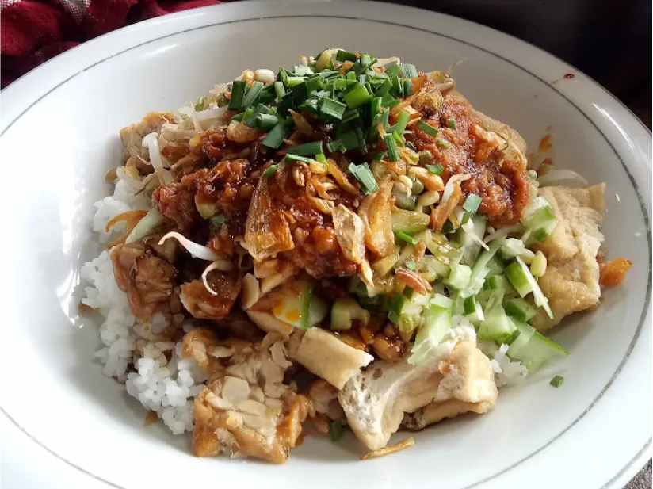

| Lengko atau nasi lengko adalah makanan sederhana. Makanan ini terdiri dari nasi, potongan tempe, potongan tahu, tauge, dan daun kucai. Semua bahan tersebut kemudian di siram dengan bumbu kacang dan kecap manis. Nasi Lengko sangat digemari karena harganya yang murah dan rasanya juga enak. Selain itu makanan ini juga bisa menjadi opsi makanan untuk para vegetarian karena semua bahannya menggunakan sumber nabati. |  |